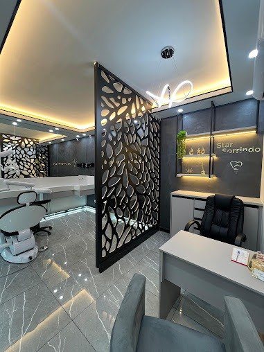
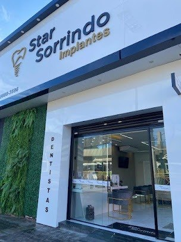

Odontologia com cuidado e precisão
Um novo sorriso começa com confiança.
Implantes dentários, próteses e cuidados odontológicos com atenção individualizada, clareza em cada etapa e foco na sua saúde bucal.
Converse com nossa equipe e descubra o próximo passo para cuidar do seu sorriso.

- 4,9/5 no Google com 12 avaliações
- Localização central em Poços de Caldas
- Atendimento com foco individualizado
- Compromisso com clareza, acolhimento e cuidado
A clínica
Cuidar do seu sorriso é cuidar de você.
Na Star Sorrindo, cada pessoa tem uma história, necessidades e expectativas próprias. Nosso compromisso é oferecer um atendimento acolhedor, explicar as possibilidades de tratamento com clareza e ajudar cada paciente a tomar decisões conscientes sobre sua saúde bucal.
-
Atendimento humanizado
Uma conversa sem pressa, para entender quem você é e o que procura.
-
Orientação clara em cada etapa
Explicações em linguagem simples, para que você saiba o que esperar.
-
Cuidado odontológico individualizado
Condutas definidas a partir da avaliação de cada caso.
Tratamentos
Cuidados odontológicos para diferentes momentos.
Cada indicação depende de uma avaliação individual. Conheça as áreas em que a Star Sorrindo atende.
-
Implantes dentários
Uma alternativa para repor dentes ausentes em determinados casos, após avaliação e planejamento.
Saiba mais -
Próteses dentárias
Possibilidades para restaurar dentes ausentes ou comprometidos, conforme cada caso.
Saiba mais -
Clínica geral
Consultas e cuidados para acompanhar e manter a saúde bucal no dia a dia.
-
Outros cuidados
Procura outro tratamento? Consulte nossa equipe para saber se ele faz parte do atendimento.
Consultar a equipe
Implantes dentários
Recupere a confiança para sorrir.
A perda de um ou mais dentes pode afetar a mastigação, a fala e a confiança ao sorrir. Os implantes dentários podem ser uma alternativa para determinados pacientes, após avaliação clínica e planejamento individualizado.
Quero saber mais sobre implantes-
O que são
O implante é uma pequena peça, geralmente de titânio, posicionada no osso para servir de base a um dente artificial. Ele substitui a raiz do dente perdido.
-
Quando podem ser indicados
Podem ser considerados para repor um ou mais dentes ausentes, quando as condições de saúde bucal e geral do paciente permitem.
-
Por que avaliar cada caso
Osso, gengiva, saúde geral e hábitos variam de pessoa para pessoa. Só a avaliação profissional, com os exames que o dentista julgar necessários, indica se o implante é adequado.
-
Como funciona o planejamento
Depois da avaliação, o profissional explica as possibilidades, as etapas previstas e os cuidados envolvidos, para que você decida com informação.
-
O que influencia etapas e duração
Quantidade de dentes, necessidade de tratamentos complementares e o tempo de cicatrização de cada organismo. Por isso, não existe um prazo único.
-
A importância do acompanhamento
Consultas de revisão e uma boa higiene em casa ajudam a cuidar do implante e dos tecidos ao redor ao longo do tempo.
Próteses dentárias
Mais possibilidades para recuperar a função e o conforto.
As próteses dentárias podem ajudar a restaurar dentes ausentes ou comprometidos. A indicação depende das condições de saúde bucal, das necessidades de cada paciente e da avaliação do profissional responsável.
Conversar sobre próteses dentáriasAvaliação individual
O ponto de partida é entender a sua saúde bucal e o que você procura.
Planejamento funcional e estético
Mastigação, fala, conforto e aparência considerados em conjunto.
Adaptação ao paciente
Ajustes conduzidos com atenção ao seu conforto no dia a dia.
Acompanhamento
Orientações e revisões para cuidar da prótese ao longo do tempo.
Nossos compromissos
Cuidado que vai além do procedimento.
-
Escuta individualizada
Compreender as necessidades e expectativas de cada paciente.
-
Clareza no atendimento
Explicar possibilidades, etapas e cuidados de forma compreensível.
-
Planejamento responsável
Condutas de acordo com a avaliação profissional e com cada caso.
-
Acompanhamento próximo
Comunicação e orientação durante todo o tratamento.
A experiência na clínica
Um ambiente pensado para receber você.

Avaliações
Histórias reais. Confiança construída no cuidado.
-
“Profissionais de altíssimo nível e infraestrutura de primeira linha.”
Avaliação no Google
-
“Ótima clínica, muito limpo, todos funcionários educados.”
Avaliação no Google
-
“Ótimo trabalho, profissionais excelentes.”
Avaliação no Google
Como começar
Três passos para conhecer suas possibilidades.
-
Entre em contato
Converse com a equipe e conte o que você gostaria de avaliar.
-
Agende uma avaliação
A clínica orienta sobre a disponibilidade e as condições do atendimento.
-
Conheça as possibilidades
O profissional realiza a avaliação necessária e explica as opções adequadas ao seu caso.
Perguntas frequentes
Dúvidas comuns, respostas claras.
As respostas abaixo são informativas e não substituem uma consulta. Cada caso é avaliado individualmente.
O que é um implante dentário?
É uma peça, geralmente de titânio, colocada no osso para substituir a raiz de um dente perdido. Sobre ela é instalado o dente artificial, como uma coroa ou prótese.
Quem pode fazer implantes?
Não há uma resposta única. A indicação depende da saúde bucal e geral, da condição do osso e de outros fatores que o dentista analisa na avaliação clínica.
Quanto custa?
O valor depende da avaliação clínica, da necessidade de tratamentos complementares e do planejamento individual. Por isso, ele é informado após a avaliação.
Quanto tempo demora?
Cada caso é único. O número de dentes, eventuais tratamentos prévios e o tempo de cicatrização influenciam a duração. O profissional explica as etapas previstas para o seu caso.
O procedimento exige avaliação prévia?
Sim. A avaliação é o que permite ao profissional entender sua saúde bucal, solicitar exames quando necessário e indicar as opções adequadas.
Como funciona a primeira consulta?
É o momento de conversar sobre o que você procura, ser examinado pelo profissional e entender as possibilidades de tratamento. Você pode tirar suas dúvidas com calma.
Qual a diferença entre implante e prótese?
O implante substitui a raiz do dente e fica no osso. A prótese é a parte que repõe o dente visível e pode ser apoiada em implantes, em dentes naturais ou na gengiva, conforme a indicação.
Como faço para agendar?
Envie uma mensagem pelo WhatsApp. A equipe responde e orienta sobre os horários disponíveis. O agendamento é confirmado pela própria clínica.
Onde fica a Star Sorrindo?
Av. Francisco Salles, 615 — Centro, Poços de Caldas — MG, CEP 37701-702.
Quais os horários?
Segunda a sexta, das 9h às 19h. Sábado, das 8h às 15h. Domingo, fechado.
Localização e contato
Estamos no coração de Poços de Caldas.
Endereço
Av. Francisco Salles, 615 — CentroPoços de Caldas — MG, CEP 37701-702
Horários
- Segunda a sexta
- 09h – 19h
- Sábado
- 08h – 15h
- Domingo
- Fechado
Seu próximo passo começa com uma conversa.
Descubra as possibilidades para cuidar do seu sorriso com uma avaliação individualizada na Star Sorrindo.